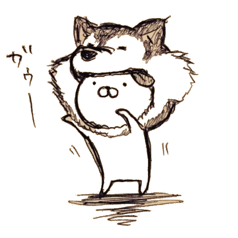

2020/3/7(土） 14:00～15:00 人狼殺にて

Pさん
お題テロリスト
"不気味の谷""狂言回し"などのお題を投下する人。
「ベツレヘムの星はゆるふわ大学生でも知ってます」

Ｋさん
感涙の貴公子
インサイダー女子を泣かすことで有名。
栗きんとんを知らない難問村の住人

白いフラン
ツール制作者
人狼殺でインサイダーをやる人。世界史と英語とは決別した過去を持つ。
Topics
経緯
白いフラン
インサイダーゲームのツールのダウンロードが300人突破しました。なんかやりたいです。
座談会しませんか？
Pさん
白いフラン
ぜひ！
■建前
今まで言えなかった、わからなかった日頃のインサイダーゲームを通しての意見、課題、疑問に3人の見解で結論を出す。
そこからわかった見解を今後のゲームに活かす。
■目的
意見交換をすることで楽しくなる。
【GM】導く導かない問題
Ｐさん
導こう導こう、って話がよく出るけど、僕はGMが故意に導くような答えをしないでいいんじゃない？って思ってる。
ＧＭの立ち位置の結論をつける
【GM】導き方のイメージ
Ｋさん
よく「ルートを考えるからちょっと時間欲しい」て人いますけど、それ通りに行く事なんてほぼ不可能だと思う。
漠然とイメージだけ持っておいて、あとは村とインサイダーがどう捉えてどの流れどの回答が適切かをその都度判断しているイメージを共有したい。
ＧＭの導き方とはなにかを考える
【村】質問刻む問題
Ｐさん
具体的には「アキレス腱が思いついたけど『下半身ですか？』って聞くべきか否か」を言及したい。
アキレス腱か、下半身かを結論づける
【村】お題に対する視点の動かし方
Ｋさん
「貸切」ていうお題だったら飲食店、客側の行動、になったあと、視点を「飲食店が関係ありながら行動するのは飲食店ではないところ→家や別のところから予約の電話を入れる行為→貸切」
という視点移動が必要になると思います。
というように、落ちている情報について何回か視点移動させていかないとお題には辿りつかないと思うんですよね。
ただ、その感覚を言語化するのも、初心者の方にすぐ実戦してもらうのも難しいような気がします笑
なので、お題探しのイメージとして「視点移動って大事だよね」というところを伝えられたらいいです。
視点移動という概念を共有する
【インサイダー】いかに自然に立ち振る舞えるか
Ｋさん
いかに自然にふるまえるかを教えたる。
インサイダーでの自然な立ち振る舞いとはなにかを結論づける
【インサイダー】お題出さない問題
白いフラン
時間切れ神勝利のゲームに一石を投じます！！！